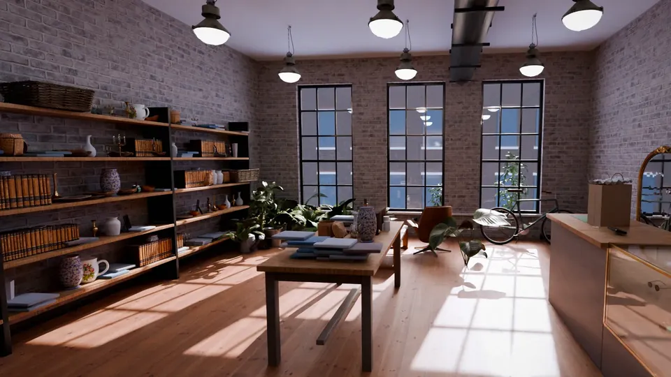

For the owner
How this sitebrings people in.
In plain words: six ways it turns people searching on their phone into calls, questions about what you have, and people walking through your door.
No numbers, no promises: what it does, and why that helps.

- 01
More people walking in
Hours, 'open now', the map and Directions sit on every screen. People nearby search on their phone before they go out: this puts your door in front of them.
- 02
'Do you have it?' answered first
'Ask if it's in stock' is one tap away. People who check first make the trip knowing it's there, and you see what people are looking for.
- 03
A reason to come in this week
Your new arrivals with your own photos. When there's something new on the table, people have a reason to stop by again.
- 04
Fewer "do you sell...?" calls
What you sell and your prices, only what you choose to show, in plain words, so people know before they call or make the trip.
- 05
Ask first, pick it up
If you hold things for people, a reserve-and-collect request reaches you by text. Gift cards, delivery or an online shop show up only if you offer them.
- 06
Calls from people ready to buy
Call is on every screen, with your Google rating and reviews next to it, so people nearby who are ready to buy reach you in one tap.
Sample site made by Eshtyhar